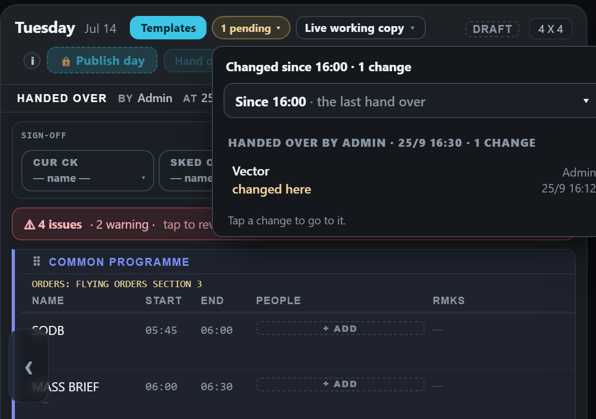
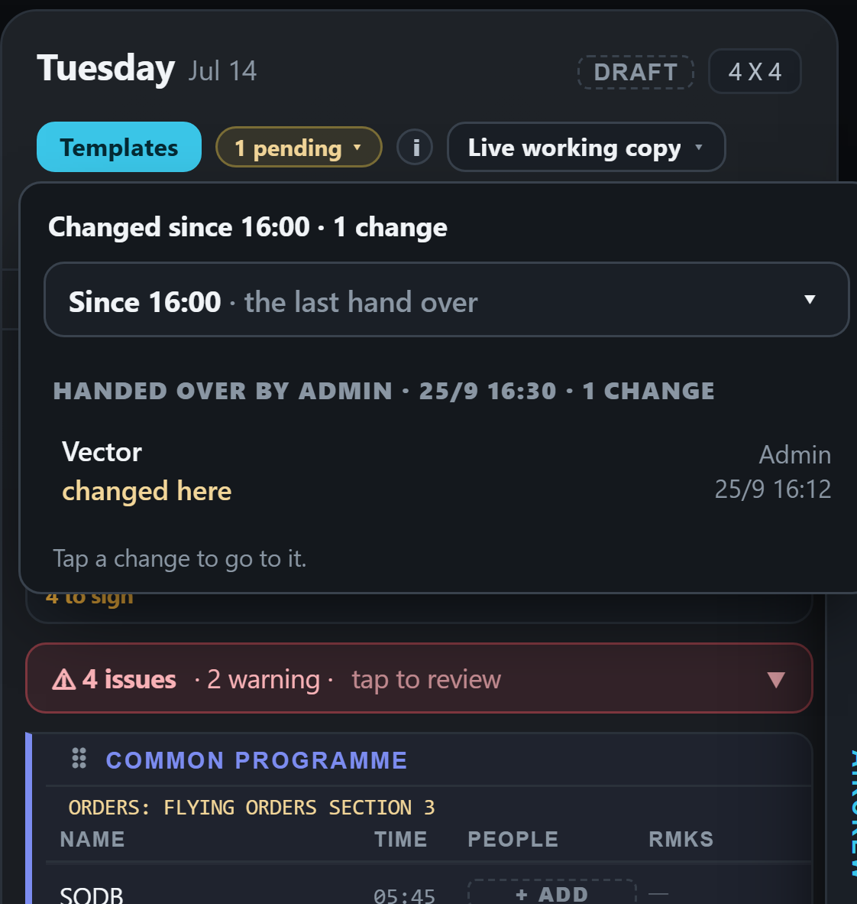
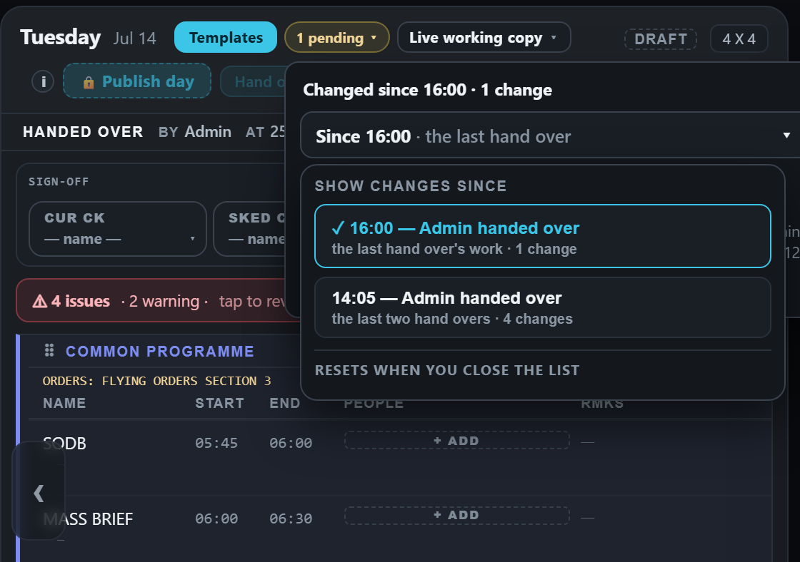
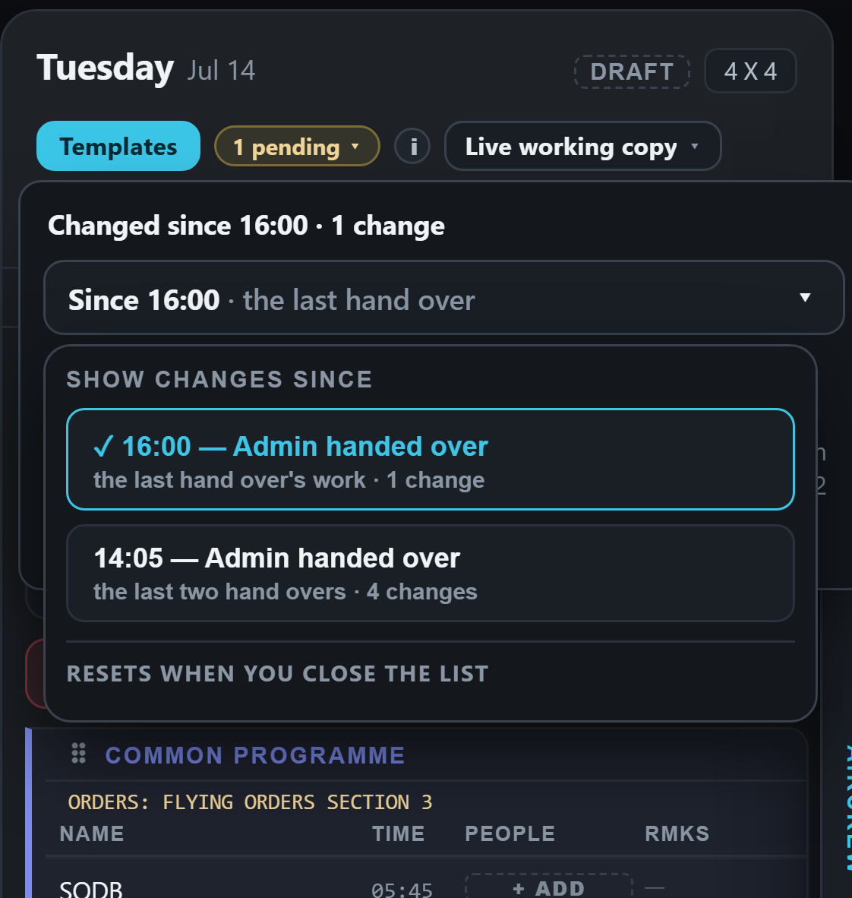
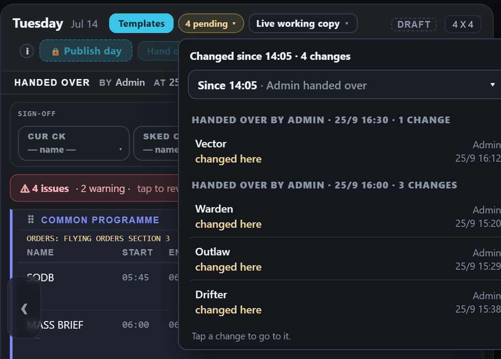
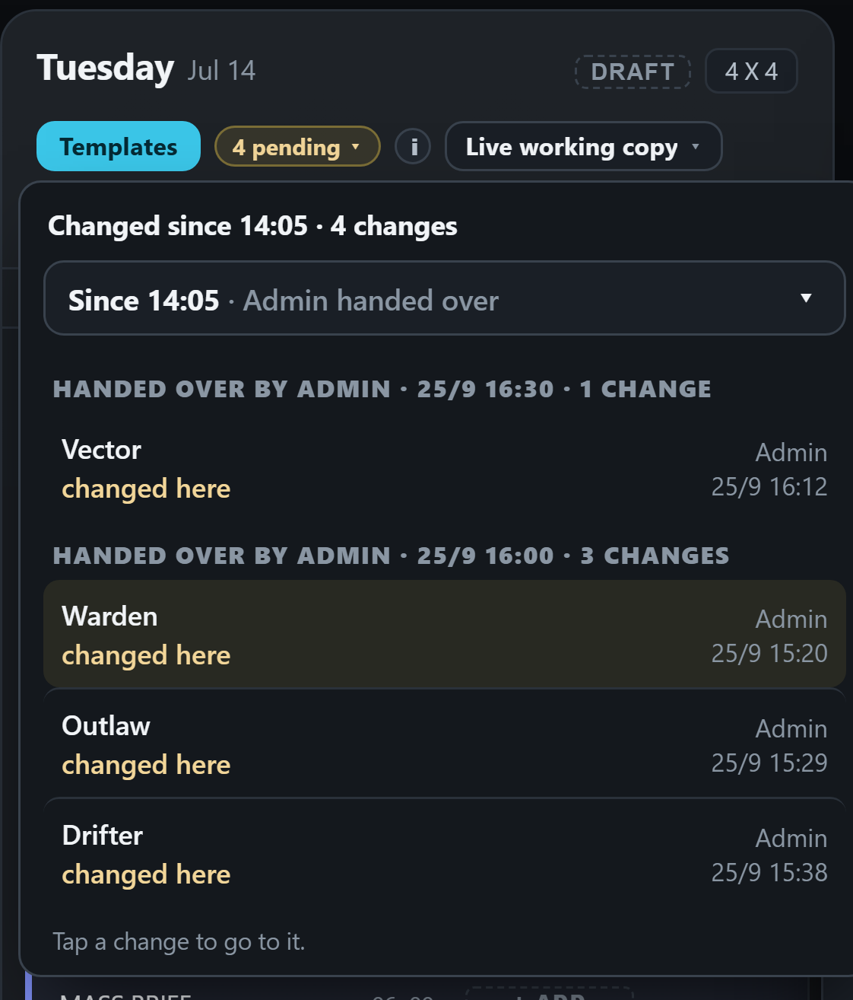
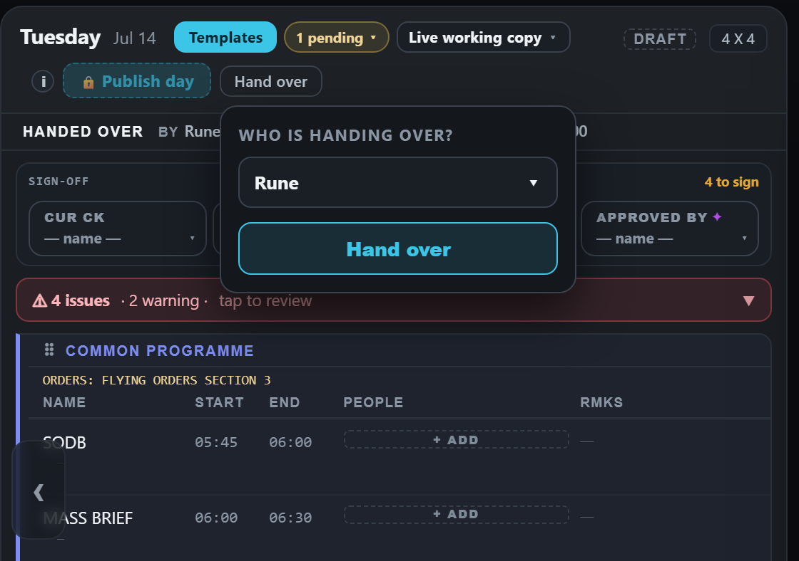
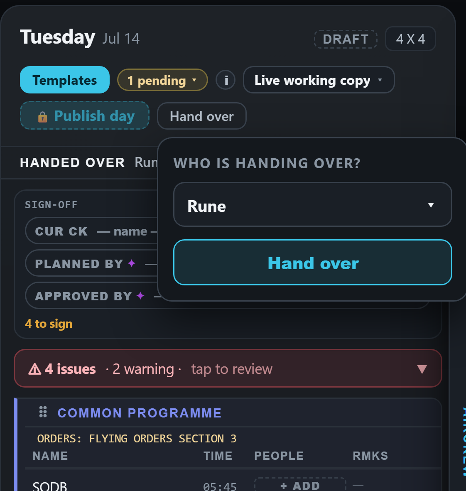

Hand over with three schedulers — the "Since" choice (mock-up)
Drawn on the real app (the demo week). The highlights are shared — everyone who opens the day sees the same ones, because everyone signs in with the same login. The Since choice lets whoever has been away widen them to catch up.
Who reads "Admin" (the shared login) until the database brings personal logins; then it reads the callsign, and each person can see "what changed since YOU last looked" with no button at all.
1 · Scheduler C opens Tuesday — the default
Hand overs so far: 14:05, 16:00 (B, three changes) and 16:30 (you, one change). C, away since 14:05, opens the pending list: it shows the last hand over's work (1), and at its top a Since choice reading "Since 16:00 · the last hand over".


2 · C taps "Since" — every hand over of the day
Each hand over, who and when, and how many changes it would show. The menu says it resets when the list is closed — it is a quick look, it changes nothing for anyone else.


3 · C picks 14:05 — caught up in one tap
"4 pending", four ORIG tags, and the list grouped by hand over: your one (16:30) and B's three (16:00). Close the list and it goes back to the default.


The other option, for comparison — Hand over asks who you are
A callsign picker, like the sign-off boxes, and the line names that person. Each person could then see "since MY last hand over" — more precise, but one more thing to pick every time.

